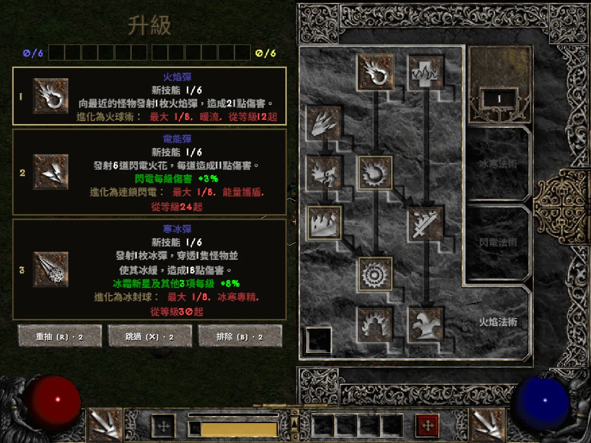
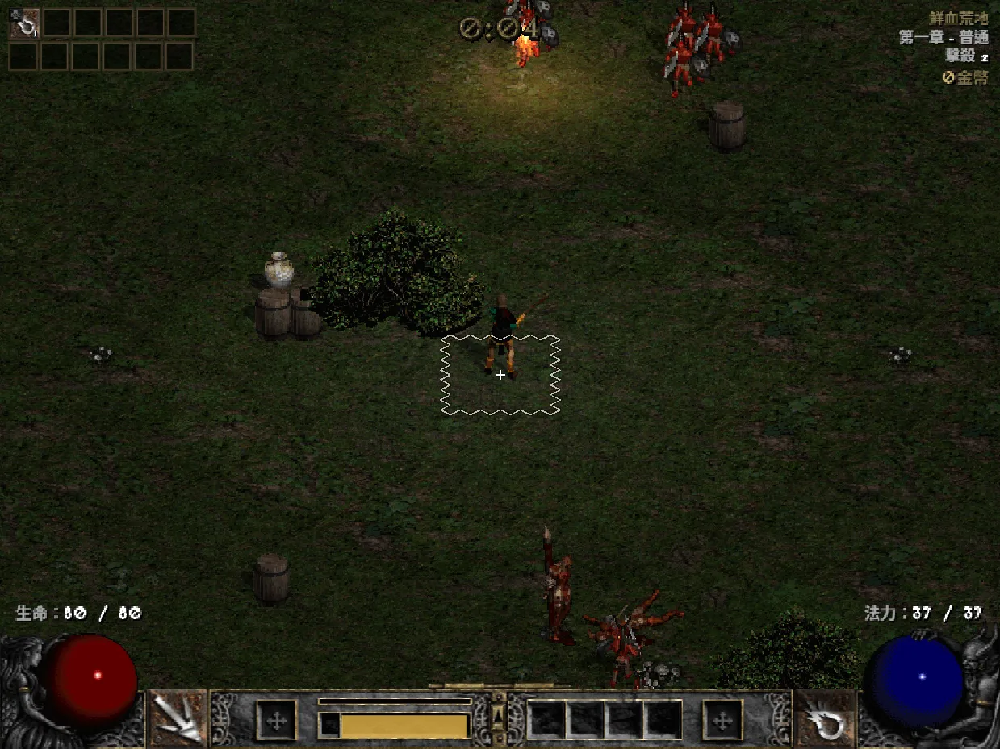

D2 Survivors
原作：framara
免费的非官方同人游戏，以《暗黑破坏神 II》为背景的幸存者类游戏。本翻译项目与原作者无关，游戏本身的问题请通过官方渠道反馈。


本项目只提供翻译，不包含任何游戏文件。开始之前，请先通过下面的官方渠道获取 D2 Survivors 和《暗黑破坏神 II》。
原作：framara
免费的非官方同人游戏，以《暗黑破坏神 II》为背景的幸存者类游戏。本翻译项目与原作者无关，游戏本身的问题请通过官方渠道反馈。
暴雪娱乐（Blizzard Entertainment）
D2 Survivors 会读取你电脑上《暗黑破坏神 II》的美术和音效资源，因此需要你自己拥有《暗黑破坏神 II：狱火重生》，或《暗黑破坏神 II》+《毁灭之王》（1.14 版本）。
译名参考：繁体中文版的技能、物品、怪物、区域等名称沿用《暗黑破坏神 II：狱火重生》官方繁体中文译名，简体中文版计划沿用官方简体中文译名；其余文本由本项目翻译。
繁体中文已可使用；标注「测试中」的语言可以选择，但翻译仍在校对。其他语言正在陆续制作中。
翻译、语言和启动器的更新。启动器和书签每次打开都会获取最新翻译，无需重新下载。
不需要手动修改任何游戏文件，全部交给启动器处理。请先关闭游戏。启动器目前只有繁体中文界面，下面的按钮名称按启动器上的原文标注。
使用 Mac、Linux、手机，或想直接在浏览器里玩？
从 D2 Survivors 官网下载桌面版，按游戏的设置界面指定《暗黑破坏神 II》的安装位置，确认能正常进入游戏。
下载 d2s-launcher.exe，放在任意文件夹即可，无需安装。
启动器会在默认位置 %LOCALAPPDATA%\Programs\D2 Survivors 查找游戏；找不到时点击「設定」（设置）指定游戏文件夹。
在「遊戲語言」（游戏语言）中选择语言，点击「啟動遊戲」（启动游戏）。首次运行会下载翻译，并自动备份原版 app.asar。
勾选「啟動時自動更新翻譯」（启动时自动更新翻译）后，每次启动都会获取最新翻译，游戏更新后也会自动重新应用。
app.asar 就会换回原始文件。%LOCALAPPDATA%\D2SurvivorsLauncher 文件夹。把下面这行设为快捷方式的目标，双击即可直接用指定语言启动游戏，不会弹出启动器窗口。
d2s-launcher.exe --launch --lang zh-TW--launch--lang <id>--no-update--update--restore--status在 d2survivors.lol 用浏览器玩？加一个书签就能切换成简体中文（也可以选择繁体中文、日文），与启动器使用同一份翻译，无需安装，电脑和手机都能用。
在 Windows 上玩桌面版？
D2 汉化 ← 拖到书签栏
javascript:import('https://cycleapple.github.io/d2survivors-localization/web/d2zh.js').then(m=>m.default()).catch(e=>alert('D2 Survivors Localization: '+e))不是。这是玩家自制的非官方翻译，与 D2 Survivors 开发者及暴雪娱乐均无关。
有，目前在测试中，部分翻译还在校对。桌面版在启动器的「遊戲語言」中选择「简体中文」即可；浏览器版点击书签后，会按浏览器语言自动选择简体中文，也可以在游戏的语言设置里切换。
可以。启动器目前只有 Windows 版；Mac、Linux 和手机请在浏览器里玩网页版，再用「浏览器版」页面里的书签切换成中文。
不会。启动器只替换游戏文件夹中的 resources\app.asar，存档保存在其他位置，不会被读取或修改。替换前会先备份原版。
不会。存档照常保存在浏览器里。书签只在当前打开的页面里替换游戏文字，不会留下任何修改，刷新页面就回到原版。
游戏更新会替换 app.asar，翻译会暂时消失。照常从启动器打开游戏就会重新应用。
如果新版本改动太大、修改规则无法匹配，启动器会报错而不会强行修改文件；这时先点击「還原原版」正常游玩，等翻译更新即可。
书签每次都会先检查修改规则是否匹配游戏的新版本。无法匹配时会提示「中文化需要更新」并且不会启动，原版游戏也不受影响；请先照常玩英文版，等这里更新即可。
翻译借用了游戏内置的韩语语言位置，所以应用中文后，菜单里的韩语会显示为「繁體中文」。想玩韩语版，在启动器中选择「한국어（原版）」再启动。
Android Chrome 从书签列表点击不会执行，要在地址栏输入书签名称「D2 汉化」，再点击下方出现的书签。iPhone 请在游戏页面打开 Safari 的书签列表点击。
也请确认书签的网址已整个替换成书签代码，开头是 javascript:。
大部分界面、技能、物品、怪物都已翻译完成，但更新说明和部分较长的技能说明还在翻译中，会先显示英文。启动器会自动更新，翻译完成后就会出现。
大部分界面、技能、物品、怪物都已翻译完成，但更新说明和部分较长的技能说明还在翻译中，会先显示英文。书签每次都加载最新翻译，翻译完成后就会出现。
启动器没有代码签名（需要每年付费购买），在下载量还不多之前，Windows SmartScreen 都会弹出这个警告。
点击「更多信息」，再点击「仍要运行」即可，之后不会再提示。请只从本站或 GitHub Releases 下载；每个 Release 都附有 d2s-launcher.exe.sha256，可以用 certutil -hashfile d2s-launcher.exe SHA256 核对。
浏览器下载时如果提示该文件不常被下载，在下载列表的菜单里选择「保留」。
暂时不行。游戏本身只允许英文字母和韩文作为角色名。
欢迎！除了繁体中文，其他语言都还在制作或测试中，特别需要母语玩家帮忙校对。联系方式整理好后会公布在这里。